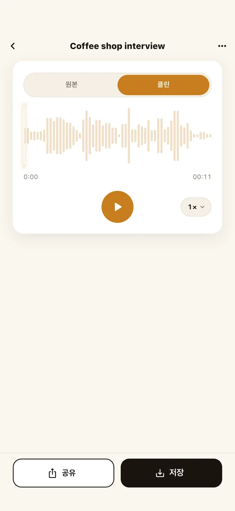

한눈에 보기
대부분의 사람이 가장 먼저 궁금해하는 네 가지입니다. 세부 내용과 출처는 아래 전체 비교표에 있습니다.
| 앱 | 업로드 없음 | 계정 불필요 | 오프라인 작동 | 무료 저장 |
|---|---|---|---|---|
| NoisyNo | ✓예 | ✓예 | ✓예 | ✓예 |
| Denoise | ✓예 | –언급 없음 | –언급 없음 | 유료 |
| Denoise.FX | ✓예 | –언급 없음 | ✓예 | –언급 없음 |
| Audio Cleaner | ✓예 | –언급 없음 | –언급 없음 | –언급 없음 |
| PureVoice | ✓예 | –언급 없음 | ✓예 | 무료로 표기 |
| NoiseKill | ✓예 | ✓예 | ✓예 | 광고 포함 |
| Offline AI Video Noise Remover | ✓예 | ✓예 | ✓예 | 하루 2개 |
| Adobe Podcast | ✗아니요 | ✗아니요 | ✗아니요 | 하루 1시간 |
| LALAL.AI | ✗아니요 | ✗아니요 | 폰에서는 불가 | 미리 듣기만 |
✓ 예 · ✗ 아니요 · – 개발사 언급 없음
전체 비교표
같은 앱 9종을 각 답의 근거와 함께 정리했습니다. 위의 7종은 폰에서 정리하고, 아래 2종은 클라우드 서비스입니다. 가격은 미국 App Store, Google Play 또는 개발사 기준 가격이며, 개발사가 밝히지 않은 항목은 언급 없음으로 표시했습니다.
표를 옆으로 밀면 모든 열을 볼 수 있습니다 →
개발사가 설명하는 노이즈 제거 앱, 2026년 11월 26일 확인. 위 첨자 숫자는 출처로 연결됩니다.
| 앱 | 오디오를 서버에 업로드? | 계정 필요? | 가격 방식 | 플랫폼 | 무료 범위 / 내보내기 제한 | 오프라인 작동? | 영상 정리? |
|---|---|---|---|---|---|---|---|
| 기기에서 정리 | |||||||
| NoisyNoGrayForge (이 사이트) | 아니요. 파일은 기기에서 정리되며, 제한적인 진단 정보에는 파일 이름이나 오디오가 포함되지 않습니다.12 | 아니요.13 | 무료 다운로드, 노이즈 제거는 길이에 관계없이 무료. Pro: 1회성, 구독 없음. iPhone, iPad, Android $5.99, Mac은 별도 구매 $7.99.23 | iPhone, iPad (iOS 15+), Mac (macOS 13.4+), Android234 | 정리된 오디오를 M4A(AAC)로 길이에 관계없이 무료 저장. 무손실 WAV, 정리된 영상, 일괄 처리, 라우드니스 정규화, 구간 자르기는 Pro 필요.12 | 설치 후 예.13 | 예. 무료는 정리된 오디오를 저장하고, Pro는 소리만 바꾼 영상으로 돌려줍니다.2 |
| Denoise: AI Noise RemoverRoutes Software SRL | 아니요. 스토어 설명에 아무것도 업로드하지 않는다고 적혀 있습니다.5 | 언급 없음5 | 무료 다운로드. 내보내기 3회 $1.99, 또는 Denoise Pro: 평생 이용권 $14.99 또는 월 구독.5 | iPhone, iPad (iOS 17+), Apple 실리콘 Mac5 | 정리와 듣기는 무료. 저장이나 공유에는 Pro 또는 내보내기 패키지 필요. M4A, WAV, 영상.5 | 언급 없음. 모든 처리가 기기에서 실행.5 | 예.5 |
| Denoise.FX for Audio & VideoAndrey Ivankin | 아니요. 처리는 기기에서 이루어집니다.6 | 언급 없음6 | 무료 다운로드. Premium 항목: 주간($3.99 또는 $4.99), “Early”($29.99 또는 $39.99), 평생 이용권($39.99 또는 $49.99).6 | iPhone (iOS 15+), Apple 실리콘 Mac6 | 무료 범위는 언급 없음. 오디오는 원하는 형식으로, 영상은 사진 앱으로 저장.6 | 예. 인터넷 연결이 필요 없습니다.6 | 예.6 |
| Audio Cleaner: AI DenoiseKnotSmith Ltd. | 아니요. 노이즈 제거가 iPhone에서 로컬로 실행됩니다.7 | 언급 없음7 | 무료 다운로드. Premium: 주 $3.99, 연 $9.99, 평생 이용권 $19.99, 그 밖의 Premium 항목 $2.99~$7.99.7 | iPhone (iOS 18+), Apple 실리콘 Mac7 | 무료 범위는 언급 없음. MP3, WAV, AAC, M4A와 MP4·MOV 영상으로 내보내기.7 | 언급 없음. 처리는 기기에서 실행.7 | 예.7 |
| Noise Reducer, PureVoiceOWLMYST | 아니요. 스토어 설명에 오디오가 기기 밖으로 나가지 않는다고 적혀 있습니다.89 | 언급 없음89 | 무료 다운로드. 스토어 설명에는 모든 기능이 무료라고 되어 있지만, App Store에는 $19.99 Lifetime 구매 항목도 있습니다.89 | iPhone (iOS 15.6+), Apple 실리콘 Mac, Android89 | 처리 길이 무제한이라고 표기. MP3, WAV, M4A. Lifetime으로 무엇이 열리는지는 언급 없음.89 | 예.89 | 언급 없음89 |
| NoiseKill: AI Noise RemoverShahLabs | 아니요. 스토어 설명에 아무것도 서버로 가지 않는다고 적혀 있습니다.10 | 아니요.10 | 광고 기반 무료. 인앱 구매 표기 없음.10 | Android 폰, 태블릿, Chromebook, Android TV10 | 무료, 워터마크 없음. 정리된 파일은 갤러리에 저장.10 | 예.10 | 예. MP4, MOV, MKV.10 |
| Offline AI Video Noise RemoverAreeb Labs | 아니요. 앱에 인터넷 권한이 없습니다.11 | 아니요.11 | 무료. Pro: 1회성 구매, 구독 없음.11 | Android11 | 무료: 하루 2회 전체 길이 저장, 워터마크 없음. Pro: 무제한 저장. MP4 영상, M4A 오디오.11 | 예.11 | 예. 화면은 손대지 않고 그대로 복사합니다.11 |
| 클라우드에서 정리 | |||||||
| Adobe Podcast Enhance SpeechAdobe, 웹 앱 | 예. 파일을 웹 앱에 업로드합니다.12 | 예. 무료 플랜도 가입부터 시작합니다.12 | 무료 플랜. Firefly Pro 플랜(Adobe Podcast Premium 포함): 12월 6일 종료되는 프로모션으로 첫 6개월간 월 $9.99.12 | 웹 브라우저12 | 무료: 오디오만, 한 번에 한 파일, 최대 30분·500 MB, 하루 1시간. 유료: 파일당 최대 2시간·1 GB, 하루 4시간.12 | 아니요. 웹에서 실행됩니다.12 | 유료 플랜만(MP4, MOV 등)12 |
| LALAL.AI Voice Cleanerlalal.ai | 예. 모바일 앱 페이지에 모든 처리가 LALAL.AI의 클라우드 서버에서 이루어진다고 적혀 있습니다.131415 | 예.1314 | 무료 Starter(10분). Lite 연 $90, Pro 연 $180. 1회성 충전 $50부터.16 | iPhone, iPad, Android, 웹, 데스크톱131416 | 무료 플랜은 미리 듣기만 가능, 전체 결과를 받으려면 유료 플랜 필요. 파일 크기는 무료 최대 200 MB, 유료 2 GB.1316 | iPhone과 Android에서는 아니요.1314 | 웹에서는 예: MP4, MOV, MKV, AVI, M4V.15 |
스토어 정보는 자주 바뀝니다. App Store의 앱 개인정보 보호 라벨과 Google Play의 데이터 보안 섹션은 개발자가 직접 작성하며, Apple은 자사 라벨이 검증된 것이 아니라고 밝히고 있습니다.
확인 방법
GrayForge는 NoisyNo를 만든 곳이므로, 이 점을 감안해 읽어 주세요. 다른 앱에 대한 모든 사실은 2026년 11월 26일에 확인한 해당 앱의 미국 App Store·Google Play 정보나 개발사 웹사이트에서 가져왔으며, 리뷰 사이트나 사용자 리뷰는 쓰지 않았습니다. 같은 녹음을 모든 앱으로 처리해 보지는 않았기 때문에, 결과가 얼마나 깨끗하게 들리는지로 순위를 매기지 않았습니다. 여기 나온 앱은 모두 무료로 다운로드하거나 써 볼 수 있으니 직접 차이를 들어 보세요.
NoisyNo 무료와 Pro
노이즈 제거는 계정 없이 길이에 관계없이 무료이며, 정리된 오디오는 M4A(AAC)로 저장됩니다. Pro는 구독이 없는 1회성 구매로, iPhone, iPad, Android에서 $5.99, 별도로 구매하는 Mac 버전은 $7.99입니다.23



Pro는 정리된 영상 내보내기, 무손실 16비트 WAV, 일괄 처리, 오디오북(−18 LUFS)·팟캐스트(−16 LUFS)·영상 및 스트리밍(−14 LUFS) 기준에 맞춘 라우드니스 정규화, 정리 전 구간 자르기를 추가합니다.2
표에 담지 못한 내용
- NoisyNo는 목소리 밑에 깔린 꾸준한 소음층(험, 히스, 팬, 에어컨, 바람, 실내 잔향, 차 소리)을 걷어내며, 음악이 아니라 말소리에 맞춰져 있습니다. 여기 나온 온디바이스 앱 중 App Store와 Google Play 양쪽에 있는 것은 NoisyNo와 PureVoice뿐입니다.12 전체 흐름은 온디바이스 사용 가이드에서 볼 수 있습니다.
- Denoise는 기능이 가장 많습니다. 방 울림 감소, 음량 고르게 맞추기, 녹음하면서 정리하기, 편집, 긴 공백 줄이기, 목소리와 음악 분리를 지원하고 받아쓰기 시간도 판매합니다.5
- Denoise.FX는 여기 나온 온디바이스 iPhone 앱 중 평가 수가 가장 많습니다(미국 평가 435개, 별점 4.5). 알고리즘을 직접 조정하고 주파수 필터를 추가할 수 있으며, 개인정보 보호 라벨에는 구매 내역과 사용자 ID가 사용자와 연결된 데이터로 표시되어 있습니다.6
- Audio Cleaner는 전후 비교가 가능한 강도 조절과 EQ, 효과, 프리셋을 갖추고 있으며, Wi-Fi로 컴퓨터에서 파일을 받아올 수 있습니다.7
- PureVoice는 두 스토어 모두에서 데이터를 수집하지 않는다고 밝히지만, 두 스토어 정보 모두 마지막 업데이트가 2025년 8월입니다.89
- NoiseKill은 파일 전체를 정리하기 전에 짧은 A/B 미리 듣기를 들려주며, Gentle, Balanced, Strong 설정이 있습니다. 다운로드 100회 이상의 작은 앱입니다.10
- Offline AI Video Noise Remover는 재생 중 길게 누르면 원본을 들을 수 있고, 작은 말소리를 위한 음성 증폭 기능이 있습니다. 새로 나온 앱으로, 현재 버전이 첫 출시 버전입니다.11
- Adobe Podcast의 유료 등급은 Adobe Firefly Pro 플랜에 포함되며 영상, 일괄 업로드, 강도 설정이 추가됩니다. 저희의 음성 메모 비교에서 Kapwing과 함께 다룹니다.12
- LALAL.AI Voice Cleaner는 배경 음악, 마이크 럼블, 파열음도 제거하며 De-Echo 설정이 있습니다.15
함께 볼 만한 도구: 팟캐스터를 위한 웹 서비스로 소음과 잔향을 줄여 주며 징글이 붙는 조건으로 월 2시간 무료인 Auphonic1718, “Data Not Collected”(데이터가 수집되지 않음) 라벨이 붙은 무료 iPhone 앱이지만 iOS 26 전용인 Audio Noise Remover & Reducer19, 그리고 Android에서는 권한을 전혀 요구하지 않는 Noise Reducer: Clean Audio20와 NoiseFix21가 있습니다. iPhone 음성 메모 앱 자체의 녹음 향상 스위치는 음성 메모 녹음 향상 vs NoisyNo 페이지에서 다룹니다.
언제 무엇을 쓸까
- 보관하거나 보낼 정리된 파일을 무료로 얻고 싶다면. NoisyNo는 정리된 M4A 오디오를 길이에 관계없이 비용 없이 저장합니다. Android에서는 NoiseKill(광고 포함)과 Offline AI Video Noise Remover(하루 2회 저장)도 무료입니다.
- 목소리가 영상 안에 있고 영상으로 돌려받아야 한다면. Android에서는 NoiseKill과 Offline AI Video Noise Remover가 영상을 무료로 저장합니다. iPhone에서는 Denoise가 구매 후, NoisyNo는 Pro로 영상을 저장합니다. Denoise.FX와 Audio Cleaner도 영상을 저장하지만 무료 범위는 밝히지 않습니다.
- 정리뿐 아니라 편집도 하고 싶다면. Denoise는 녹음, 자르기, 합치기, 공백 줄이기, 받아쓰기를 지원하고, Audio Cleaner는 EQ와 프리셋을 더합니다.
- iPhone과 Android 폰을 함께 쓰거나 Mac을 쓴다면. NoisyNo는 셋 모두에서 실행됩니다. PureVoice도 두 스토어에 있지만 2025년 8월 이후 업데이트되지 않았습니다.
- 회의, 인터뷰, 진료 상담처럼 기밀인 녹음이라면: 어떤 온디바이스 앱을 쓰든 다른 회사의 서버에 녹음이 남지 않습니다. 자세한 내용은 회의 녹음 정리하기에 있습니다.
- 앱을 설치할 수 없는 컴퓨터이고 민감하지 않은 클립이라면: 브라우저에서 Adobe Podcast나 LALAL.AI를 쓰세요. 가입, 업로드, 무료 플랜 제한은 감안해야 합니다.
오프라인 여부 직접 확인하기
스토어 설명은 앱을 파는 사람이 씁니다. 저희 앱도 마찬가지입니다. 2분만 투자하면 더 많은 것을 알 수 있습니다.
- Wi-Fi를 끈 상태로 비행기 모드를 켜고 짧은 녹음을 정리해 보세요. 끝까지 처리된다면 작업이 폰에서 실행된 것입니다.
- 처리 전에 로그인 화면이 나온다면 파일이 계정에 연결된다는 뜻입니다. 개인정보 처리방침에서 파일이 어떻게 다뤄지는지 확인하세요.
- 개인정보 섹션을 읽어 보세요(App Store의 앱 개인정보 보호, Google Play의 데이터 보안). 둘 다 개발자가 직접 작성한다는 점은 염두에 두세요.
애초에 녹음되지 않은 소음은 지울 필요도 없습니다. 선풍기와 에어컨에서 떨어지고, 말하는 사람 가까이에 폰을 두고, iPhone이라면 녹음할 때 목소리 분리를 써 보세요.
자주 묻는 질문
오프라인으로 쓸 수 있는 노이즈 제거 앱은 무엇인가요?
iPhone에서는 NoisyNo, Denoise.FX, PureVoice가, Android에서는 NoisyNo, NoiseKill, Offline AI Video Noise Remover, PureVoice가 인터넷 연결 없이 녹음을 정리한다고 밝히고 있습니다. Denoise와 Audio Cleaner는 모든 처리가 기기에서 이루어진다고 하지만 오프라인이라는 표현은 쓰지 않습니다. Adobe Podcast와 LALAL.AI 모바일 앱은 자사 서버에서 파일을 처리합니다.
워터마크나 저장 제한이 없는 무료 노이즈 제거 앱이 있나요?
NoisyNo는 정리된 오디오를 길이에 관계없이 계정 없이 M4A로 무료 저장합니다. Android에서는 NoiseKill이 광고 기반 무료이며 워터마크가 없고, Offline AI Video Noise Remover는 하루 2개 파일까지 무료로 저장합니다. Denoise는 저장할 때 비용이 들고, Adobe Podcast 무료 플랜은 하루 1시간 분량의 오디오까지, LALAL.AI 무료 플랜은 결과 미리 듣기만 가능합니다.
Adobe Podcast와 LALAL.AI는 녹음을 업로드하나요?
네. Adobe Podcast Enhance Speech는 가입 후 업로드한 파일을 처리하며, LALAL.AI의 iOS·Android 페이지에는 모든 처리가 자사 클라우드 서버에서 이루어지고 계정이 필요하다고 적혀 있습니다.
NoisyNo는 무료인가요?
네. 노이즈 제거는 길이에 관계없이 무료이고, M4A로 저장되며 계정이 필요 없습니다. Pro는 iPhone, iPad, Android에서 $5.99, Mac 버전은 $7.99인 1회성 구매로, 영상 내보내기, WAV, 일괄 처리, 라우드니스 정규화, 구간 자르기를 추가합니다.
출처
모든 페이지는 2026년 11월 26일에 확인했습니다. 가격은 그날 해당 페이지에 표시된 미국 가격입니다.
- NoisyNo product page (GrayForge) · https://grayforge.app/noisyno/온디바이스 처리, 계정 없음, 설치 후 오프라인 작동, 지원 형식, Pro 기능, 구독 없음, 플랫폼. 2026-11-26 확인.
- GrayForge llms.txt, NoisyNo section · https://grayforge.app/llms.txt제거하는 소음, 음악이 아닌 말소리용, 입력·출력 형식, Pro 유무에 따른 영상 처리, Pro 기능과 1회성 가격, Mac용 Pro 별도 구매. 2026-11-26 확인.
- NoisyNo: Voice Noise Remover, App Store (US) · https://apps.apple.com/us/app/id6772728543인앱 구매(NoisyNo Pro $5.99, Mac 버전 $7.99), iOS 15·iPadOS 15·macOS 13.4 요구 사항, 업로드 없음, 계정 없음. 2026-11-26 확인.
- NoisyNo: Voice Noise Remover, Google Play (US) · https://play.google.com/store/apps/details?id=com.grayforge.noisynoAndroid 스토어 정보, 온디바이스 모델, 클라우드 없음, 계정 없음. 2026-11-26 확인.
- Denoise: AI Noise Remover, App Store (US) · https://apps.apple.com/us/app/id946423200업로드 없음, 기기에서 실행, 정리와 듣기 무료, 저장에는 Pro 또는 내보내기 패키지, 인앱 구매 가격, M4A·WAV·영상 내보내기, 편집과 받아쓰기 기능, 호환성. 2026-11-26 확인.
- Denoise.FX for Audio & Video, App Store (US) · https://apps.apple.com/us/app/id1623119654인터넷 연결이 필요 없는 온디바이스 처리, 인앱 구매 가격, 영상 지원, 버전 3.0 모드, 호환성, 평가, 앱 개인정보 보호 라벨. 2026-11-26 확인.
- Audio Cleaner: AI Denoise, App Store (US) · https://apps.apple.com/us/app/id6751505212로컬 노이즈 제거, 인앱 구매 가격, 내보내기 형식, 영상 지원, EQ와 프리셋, iOS 18 요구 사항. 2026-11-26 확인.
- Noise Reducer, PureVoice, App Store (US) · https://apps.apple.com/us/app/id6748527663오프라인, 업로드 없음, Lifetime $19.99, “모든 기능 무료” 문구, MP3·WAV·M4A, 호환성, 데이터가 수집되지 않음 라벨, 마지막 업데이트 2025년 8월. 2026-11-26 확인.
- Noise Reducer, PureVoice, Google Play (US) · https://play.google.com/store/apps/details?id=com.owlmyst.ai.purvoice오프라인, 업로드 없음, 인앱 구매, 데이터 수집 없음, 2025년 8월 27일 업데이트. 2026-11-26 확인.
- NoiseKill: AI Noise Remover, Google Play (US) · https://play.google.com/store/apps/details?id=com.mcore.noisekill온디바이스, 인터넷 불필요, 계정 없음, 워터마크 없음, 광고 포함, 영상·오디오 형식, 지원 기기, 데이터 보안 섹션. 2026-11-26 확인.
- Offline AI Video Noise Remover, Google Play (US) · https://play.google.com/store/apps/details?id=com.areeblabs.noiseremover인터넷 권한 없음, 가입 없음, 무료(하루 2회 저장)와 1회성 Pro, MP4·M4A 출력, 첫 출시 버전. 2026-11-26 확인.
- Adobe Podcast plans · https://podcast.adobe.com/en/plansEnhance Speech 무료 플랜과 Firefly Pro 플랜 제한, 가입, 한 번에 한 파일 업로드, 유료 플랜의 영상 지원, 12월 6일 종료되는 첫 6개월 월 $9.99 프로모션. 2026-11-26 확인.
- LALAL.AI for iOS · https://www.lalal.ai/ios-app/LALAL.AI 클라우드 서버에서 처리, 인터넷과 계정 필요, 무료 플랜은 미리 듣기만, iPhone과 iPad. 2026-11-26 확인.
- LALAL.AI for Android · https://www.lalal.ai/android-app/LALAL.AI 클라우드 서버에서 처리, 인터넷과 계정 필요, 소음과 배경 음악 제거. 2026-11-26 확인.
- LALAL.AI Voice Cleaner · https://www.lalal.ai/voice-cleaner/온라인 서비스, 업로드 필요, 제거하는 소리, De-Echo 설정, 영상 형식. 2026-11-26 확인.
- LALAL.AI pricing · https://www.lalal.ai/pricing/Starter·Lite·Pro 플랜, 업로드 크기 제한, 1회성 충전. 2026-11-26 확인.
- Auphonic pricing · https://auphonic.com/pricing징글 포함 월 2시간 무료, 연간 결제 시 월 $11부터인 정기 크레딧, 5시간 $12부터인 1회성 크레딧, 모든 플랜에서 소음·잔향 감소. 2026-11-26 확인.
- Auphonic help, Production · https://auphonic.com/help/web/production.html브라우저, 링크, 외부 서비스로 업로드, 오디오 파일은 제한된 기간만 보관, 노이즈 제거와 잔향 설정. 2026-11-26 확인.
- Audio Noise Remover & Reducer, App Store (US) · https://apps.apple.com/us/app/id6782887119무료, 계정 없음, 네트워크 접근 없음, 영상과 오디오, 데이터가 수집되지 않음 라벨, iOS 26 요구 사항. 2026-11-26 확인.
- Noise Reducer: Clean Audio, Google Play (US) · https://play.google.com/store/apps/details?id=noise.reducer내장 모델, 계정 없음, 권한 없음, 광고 없음, WAV 출력, 꾸준한 소음만, 일괄 처리 없음. 2026-11-26 확인.
- NoiseFix: offline AI Denoiser, Google Play (US) · https://play.google.com/store/apps/details?id=io.cyberfly.noisefix오프라인, 계정 없음, 1회성 구매 옵션, 음악이 아닌 목소리용, 데이터 수집 없음. 2026-11-26 확인.
NoisyNo — 음성 노이즈 제거 앱
음성 녹음과 영상 오디오에서 험, 히스, 팬 소음, 바람 소리, 실내 잔향을 기기 안에서 제거합니다. 업로드도, 계정도 없고, 노이즈 제거는 길이에 관계없이 무료입니다.
알려 주시면 표를 고치겠습니다.
스토어 정보는 바뀝니다. 위의 가격, 플랫폼, 제한 중 NoisyNo에 관한 것을 포함해 오래된 내용이 있다면 링크와 함께 알려 주세요. 표를 바로잡겠습니다.
grayforge.dev@gmail.com